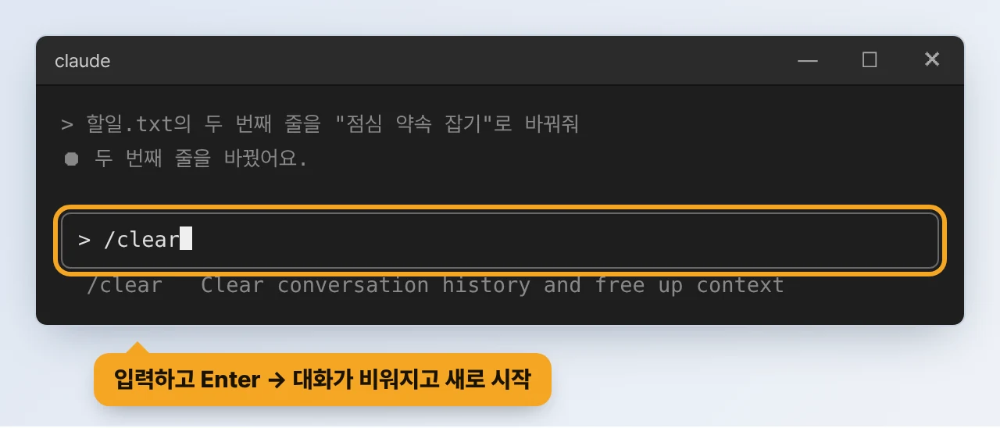
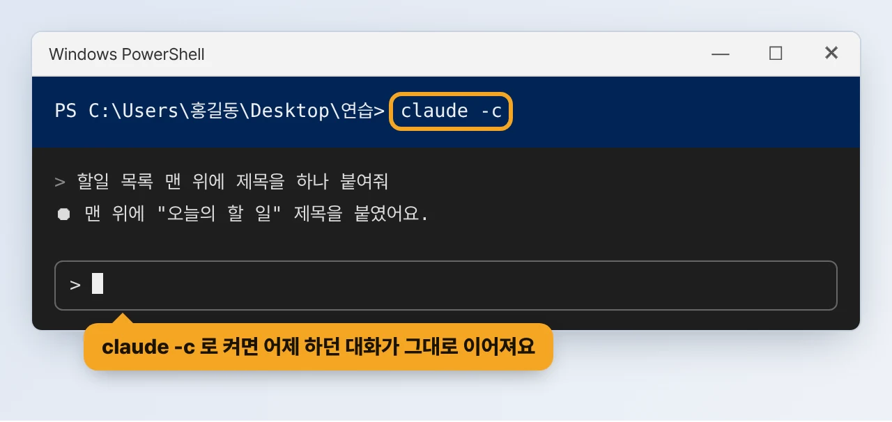
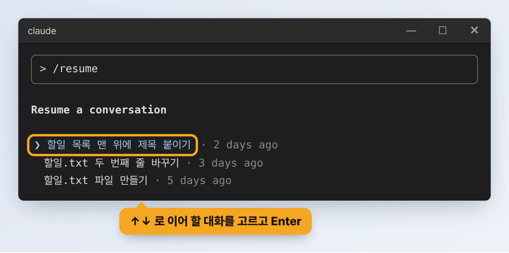
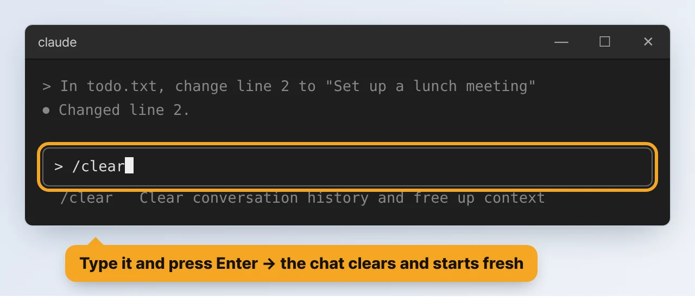
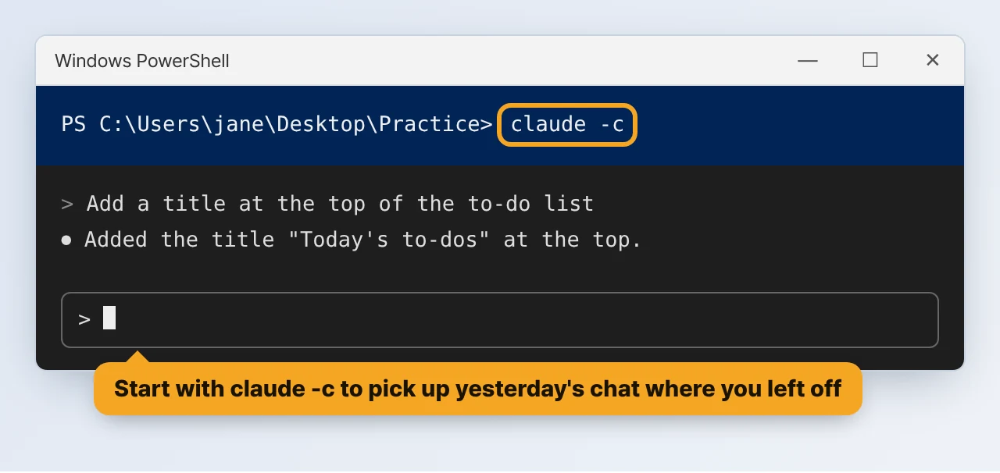
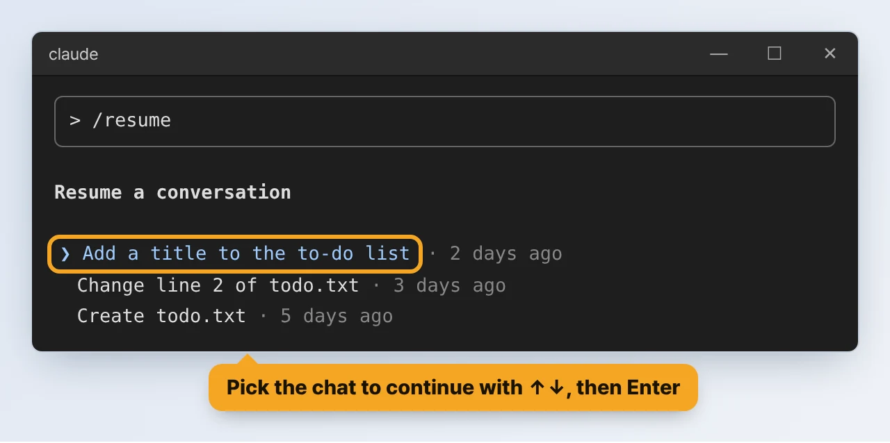

👆 이 내용은 버튼 따라 하는 실습으로도 있어요. 처음이라면 실습으로 직접 해 보고, 이 글은 복습할 때 보세요. 실습 시작하기 →
※ 글 속 그림은 따라 하기 쉽도록 그린 예시입니다. 실제 화면과 모양이 조금 다를 수 있어요.
오늘 새로 배우는 것
- 대화를 비우고 새로 시작하기 —
/clear - 껐다가 다음에 이어서 하기 —
claude -c - 예전 대화를 골라서 이어 하기 —
/resume
먼저 알아 두기 — "대화"가 뭔가요?
Claude Code를 켠 뒤 주고받은 말 전체를 대화라고 해요. 같은 대화 안에서는 Claude가 앞의 이야기를 기억해서, "아까 그 파일"이라고만 해도 알아들어요.
대신 대화가 너무 길어지면 Claude가 헷갈리거나 느려질 수 있어요. 그래서 다른 일을 시작할 때는 대화를 새로 여는 게 좋아요.
1. Claude Code 켜기
2편의 1번과 똑같습니다. 연습 폴더를 열고 → 주소 칸에 powershell → Enter → claude → Enter.
(Mac은 터미널에서 cd + 한 칸 띄우고 연습 폴더를 끌어다 놓고 Enter → claude → Enter)
2. 대화를 비우고 새로 시작하기 — /clear
입력 칸에 /(슬래시, 키보드 오른쪽 아래 ? 키)를 치면 쓸 수 있는 명령 목록이 나와요. 이렇게 /로 시작하는 말은 Claude에게 하는 부탁이 아니라 Claude Code를 조작하는 명령이에요.
/clear
화면이 깨끗해지면 새 대화가 시작된 거예요. 정말 잊었는지 확인해 볼까요?
방금 우리가 무슨 이야기 했지?Claude가 "이전 대화 내용이 없다"는 식으로 답하면 성공이에요.
3. 껐다가 다음에 이어서 하기 — claude -c
오늘 하던 일을 내일 이어서 하고 싶을 때 써요.
- /exit 를 입력하고 Enter 한 뒤, 창을 닫습니다. (오늘 일을 끝냈다고 생각하세요)
- 1번처럼 연습 폴더에서 창을 다시 엽니다.
- 이번에는 claude 대신 아래처럼 입력하고 Enter.
claude -c-c 는 "이어서(continue)"라는 뜻이에요. claude 다음에 한 칸 띄우고 적으세요.

마지막으로 했던 대화("방금 우리가 무슨 이야기 했지?")가 화면에 그대로 보이면 성공이에요. 이제 이어서 부탁하면 됩니다.
4. 예전 대화를 골라서 이어 하기 — /resume
마지막 대화가 아니라 며칠 전 대화를 이어 하고 싶을 때 써요.
/resume
예전 대화 목록이 나오면 ↑↓ 로 고르고 Enter. 그 대화가 열리고 이어서 부탁할 수 있어요.
처음 켤 때부터 고르고 싶다면 claude 대신 claude -r 로 켜도 같은 목록이 나와요.
언제 무엇을 쓸까요?
| 이럴 때 | 이렇게 |
|---|---|
| 전혀 다른 일을 시작할 때 | /clear (대화만 비움, 파일은 그대로) |
| 어제 하던 일을 이어서 | claude -c 로 켜기 |
| 며칠 전 대화를 골라서 | /resume (또는 claude -r 로 켜기) |
잘 안 될 때
| 이런 경우 | 이렇게 하세요 |
|---|---|
| claude -c 를 했는데 이어 할 대화가 없다고 나옴 | 연습 폴더에서 창을 열었는지 확인하세요. 대화는 폴더마다 따로 저장돼요. |
| /resume 목록에 대화가 하나뿐임 | 정상이에요. 그 폴더에서 나눈 대화가 그만큼뿐이라는 뜻이에요. |
| / 를 쳤는데 목록이 안 나옴 | 입력 칸 맨 앞에 / 를 쳤는지 확인하세요. 한글 입력 상태라면 한/영 키를 누르세요. |
오늘 배운 것
- Claude는 같은 대화 안에서만 앞의 이야기를 기억한다.
- /clear 는 대화만 비운다. 파일은 그대로다.
- 다음 날 이어 할 때는 같은 폴더에서 claude -c, 예전 대화를 고를 때는 /resume.
다음 글에서는 여러 파일을 한꺼번에 정리하면서, 새로운 허락 화면("명령을 실행해도 될까요?")을 읽는 법을 배웁니다.
※ The pictures in this guide are illustrations to make it easy to follow. Your screen may look a little different.
What you'll learn today
- Clear the conversation and start fresh —
/clear - Close it and pick up later —
claude -c - Choose an older conversation to continue —
/resume
First — what is a "conversation"?
Everything you and Claude say after you start Claude Code is a conversation. Within the same conversation, Claude remembers what was said, so "that file from earlier" is enough.
But if a conversation gets very long, Claude can get confused or slow down. So it's best to start a new conversation when you start a different task.
1. Start Claude Code
Same as step 1 in Guide 2. Open the practice folder → type powershell in the address bar → Enter → claude → Enter.
(On a Mac: in Terminal, type cd and a space, drag in the practice folder, press Enter → claude → Enter)
2. Clear the conversation and start fresh — /clear
Type / (slash, the ? key at the bottom right of the keyboard) in the box and a list of commands appears. Things that start with / aren't requests to Claude; they're commands that control Claude Code itself.
/clear
When the screen clears, a new conversation has started. Let's check that it really forgot.
What were we just talking about?If Claude says something like "there's no earlier conversation", it worked.
3. Close it and pick up later — claude -c
Use this when you want to continue today's work tomorrow.
- Type /exit, press Enter, and close the window. (Pretend you're done for the day.)
- Open the window again in the practice folder, as in step 1.
- This time, instead of claude, type the following and press Enter.
claude -c-c means "continue". Type it after claude with one space in between.

If you see your last conversation ("What were we just talking about?") on screen, it worked. Now just keep asking.
4. Choose an older conversation — /resume
Use this when you want to continue a conversation from a few days ago, not the last one.
/resume
When the list of older conversations appears, choose one with ↑↓ and press Enter. That conversation opens and you can carry on.
To choose right when you start, type claude -r instead of claude. You'll see the same list.
Which one, when?
| When | Use |
|---|---|
| Starting something completely different | /clear (clears only the chat; files stay) |
| Continuing yesterday's work | Start with claude -c |
| Picking a conversation from days ago | /resume (or start with claude -r) |
If something goes wrong
| If this happens | Do this |
|---|---|
| claude -c says there's no conversation to continue | Check that you opened the window in the practice folder. Conversations are saved per folder. |
| The /resume list has only one conversation | That's normal. It just means that's all you've had in that folder. |
| Typing / shows no list | Make sure / is the very first thing in the box, and that your keyboard is set to English. |
What you learned today
- Claude remembers earlier messages only within the same conversation.
- /clear clears only the conversation. Your files stay.
- To continue the next day, use claude -c in the same folder; to pick an older one, use /resume.
In the next guide you'll organize several files at once and learn to read a new permission screen: "May I run this command?"